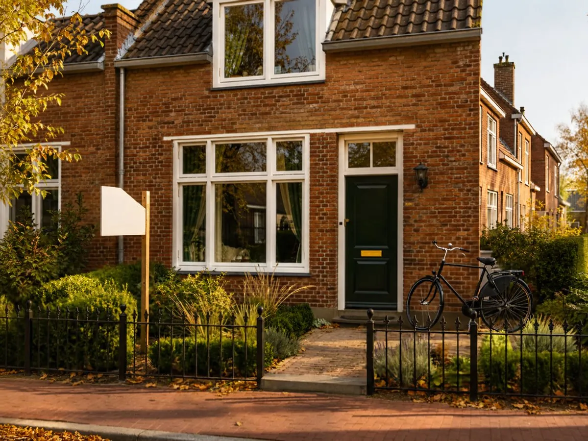

Makelaar in Nijmegen: welke makelaar past bij jou?
Bijgewerkt op 22 november 2026.
Nijmegen heeft tientallen makelaars, van landelijke ketens tot kantoren waar je de eigenaar zelf aan de lijn krijgt. Welke het best bij je past, hangt vooral af van wat je gaat doen: kopen, verkopen, huren of een bedrijfspand zoeken. Daarom zetten we ze per situatie op een rij.

Zo hebben we gekozen
We lazen in november 2026 de websites van de makelaars in onze bedrijvengids. Per situatie kozen we de kantoren die daar het duidelijkst op ingericht zijn. Tarieven staan bijna nooit op de sites, dus vraag altijd vooraf een offerte en vergelijk.
Je koopt een huis
Een aankoopmakelaar staat alleen aan jouw kant. Hij gaat mee naar de bezichtiging, kijkt naar de staat van het huis en onderhandelt over de prijs.
Attis: alleen aankopen, geen dubbele pet
Attis verkoopt zelf geen huizen. Het kleine team aan de Van Welderenstraat helpt alleen kopers, van starters tot mensen die voor de lange termijn zoeken.
Ze kijken kritisch mee bij de bezichtiging en denken mee over je bod en je budget. Voor je hypotheek kun je er ook een taxatierapport laten maken.
Goed voor: wie voor het eerst een huis koopt.
Vernooij: één vaste aankoopmakelaar
Marieke Vernooij werkt sinds 2000 in de makelaardij en begeleidt je zelf, van de eerste bezichtiging tot de onderhandeling. Ze zoekt mee in Nijmegen en in dorpen als Lent, Malden en Wijchen.
Ze is ook register taxateur. Een taxatierapport heb je binnen een paar werkdagen na de bezichtiging, en ze werkt met een vaste prijs.
Goed voor: wie één aanspreekpunt wil en vooraf de kosten wil weten.
Je verkoopt je huis
Kolmeijer: verkopen met styliste en fotograaf
Kolmeijer zit sinds 2019 in een oud autoverhuurpand aan de Tooropstraat, en je kent ze misschien van de oranje VW-bus. Bij een verkoop komen een styliste en een fotograaf langs, en het kantoor regelt ook het energielabel.
Je verkoopt op basis van no cure no pay. Als opdrachtgever kun je de makelaars ook 's avonds en in het weekend bellen of appen.
Goed voor: wie wil dat het huis er op Funda op zijn best uitziet.
Met Maurice: weinig opdrachten, veel aandacht
Maurice en Birgit werken vanuit de Thiemeloods in Bottendaal. Ze nemen bewust maar een beperkt aantal opdrachten aan, zodat ze bij elke bezichtiging zelf aanwezig zijn.
Na een waardebepaling maak je samen een verkoopplan, met professionele foto's en een verhaal over je huis. Langskomen gaat op afspraak.
Goed voor: wie persoonlijke begeleiding belangrijker vindt dan een groot kantoor.
Fontein: één makelaar, sinds 1998 in de regio
Maarten Fontein runt sinds 2006 zijn eigen NVM-kantoor aan de Staringstraat. Je hebt één vast aanspreekpunt, en hij legt nuchter uit hoe het verkopen in zijn werk gaat.
Je kunt er ook terecht voor aankoopbegeleiding en een gevalideerd taxatierapport. Het kantoor is doordeweeks bereikbaar, bezoek gaat op afspraak.
Goed voor: wie een no-nonsense aanpak zoekt.
Je zoekt een huurhuis of verhuurt
Rotsvast: huurwoningen, ook voor expats
De Nijmeegse vestiging van deze landelijke keten zit aan de Molenveldlaan. Op de site zie je het huuraanbod in de regio, van appartementen in de stad tot huizen in Lent, Malden en Beuningen.
Er is ook een Engelstalige site en extra hulp voor expats. Verhuurders kunnen er terecht voor beheer en een puntentelling van hun woning. Langskomen gaat op afspraak.
Goed voor: internationale studenten en expats die een huurhuis zoeken.
Numaga Vastgoed: verhuur en beheer
Numaga doet alleen verhuur, voor particulieren en bedrijven. Zoek je een kamer of woning, dan kijken ze in hun bestand wat bij je past.
Heb je zelf een pand, dan kunnen ze het hele beheer overnemen, van de administratie tot het onderhoud. Het kantoor is doordeweeks open, bezoek op afspraak.
Goed voor: verhuurders die het beheer uit handen willen geven.
Een makelaar in je eigen wijk
Disveld: twee Lentenaren in Lent
Onno en Jop Disveld zijn in Lent geboren. Hun familie kweekte bloemen in de kassen waar nu nieuwbouwwijken staan, dus ze kennen de Waalsprong van voor de nieuwbouw.
Je kunt bij ze terecht voor verkoop, aankoop, verhuur en taxaties. Een waardebepaling vraag je gratis aan.
Goed voor: wie in Nijmegen-Noord koopt of verkoopt.
Hermsen: familiebedrijf sinds 1970
Aan de Berg en Dalseweg zit dit familiebedrijf met NVM-makelaars. Ze doen verkoop, aankoop en taxaties, van bestaande huizen en nieuwbouw tot bedrijfspanden.
Telefonisch zijn ze ook 's avonds en in het weekend bereikbaar, en een bezichtiging buiten kantoortijd kan in overleg. Op zaterdag kun je op afspraak langskomen.
Goed voor: wie in Oost of de Hazenkamp woont.
Homan: tegenover het busstation in Dukenburg
Sjaak en Bas Homan werken al ruim dertig jaar in Nijmegen. Hun kantoor zit bij winkelcentrum Dukenburg, tegenover het busstation.
Verkoop je, dan komt je huis op Funda, op sociale media en in de etalage, soms met dronebeelden. Ze komen ook bij je thuis voor een gesprek.
Goed voor: wie in Dukenburg of Lindenholt woont.
Je zoekt een bedrijfspand
Keizer Karel: alleen commercieel vastgoed
Sinds 2013 zit dit kantoor aan de Graafseweg. Het doet alleen bedrijfsruimten, kantoren en winkelpanden, voor koop, verkoop, huur en verhuur.
Ze helpen ook bij taxaties, beleggingen en beheer. Het zwaartepunt ligt op Nijmegen, Wijchen en Weurt.
Goed voor: ondernemers die een winkel of kantoor zoeken.
Verbeek: bedrijfshallen op Kerkenbos
Verbeek zit zelf op bedrijventerrein Kerkenbos en bemiddelt in kantoren, bedrijfshallen en winkelpanden. Op de site zoek je het aanbod op type, plaats en oppervlakte.
Ze vragen eerst goed door wat je bedrijf nodig heeft, en doen ook taxaties en beleggingsadvies. Het kantoor is doordeweeks open.
Goed voor: wie een bedrijfshal of werkplaats zoekt.
Ook goed
- Wil je net over de grens wonen, in Kranenburg, Kleve of Goch? Abo Vastgoed aan de Hertogstraat bemiddelt in huizen aan de Duitse kant.
- Aan de Waldeck Pyrmontsingel krijg je bij Jan van Lieshout meestal de makelaar zelf aan de lijn. Het kantoor doet woningen en bedrijfsruimte.
Ga je verhuizen naar Nijmegen? Lees ook wonen in Nijmegen: waar moet je aan denken?
Veelgestelde vragen
Wat is het verschil tussen een aankoopmakelaar en een verkoopmakelaar?
Een verkoopmakelaar werkt voor de verkoper en probeert een zo hoog mogelijke prijs te krijgen. Een aankoopmakelaar staat aan de kant van de koper. Attis en Vernooij doen alleen aankopen.
Welke makelaar in Nijmegen helpt bij een huurwoning?
Rotsvast aan de Molenveldlaan en Numaga Vastgoed aan de Groesbeekseweg richten zich op verhuur. Rotsvast heeft ook een Engelstalige site.
Welke makelaar is ook in het weekend bereikbaar?
Bij Kolmeijer en Hermsen kun je de makelaars ook 's avonds en in het weekend bellen.
Wat kost een makelaar in Nijmegen?
De meeste makelaars zetten hun tarieven niet op hun site. Vraag bij twee of drie kantoren een offerte en vraag of je een percentage of een vast bedrag betaalt.